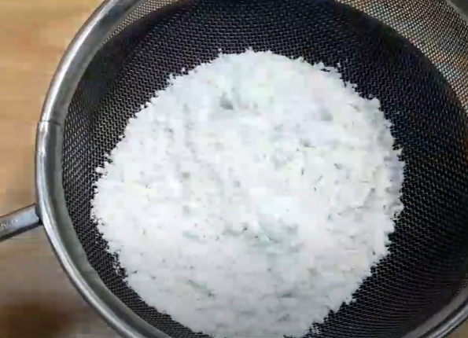

- Sieve maida, cornflour & salt 
- In a bowl add coffee powder & hot water and mix well.
- In a bowl add softened Butter. Beat for 2 mins
- Add the powdered sugar & miz until it becomes light & fluffy.
- Now add the dry mixtures in two batches and mix well (Till it looks like a crumb texture).
- Now add the coffee decoction
- Roll out the dough in about 4-5 mm thickness & cut to desired shape.
- STOVE: Low flame 15-20 mins
- OVEN: 180 degree celcius for 15-20 mins